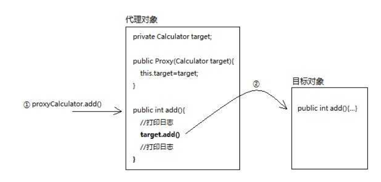
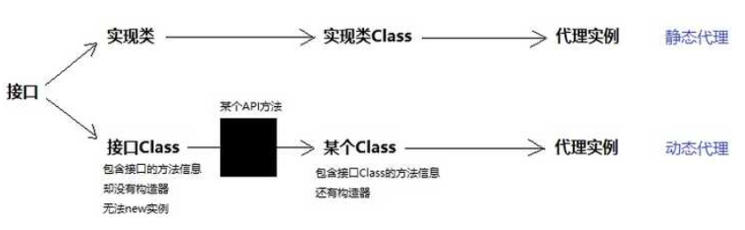
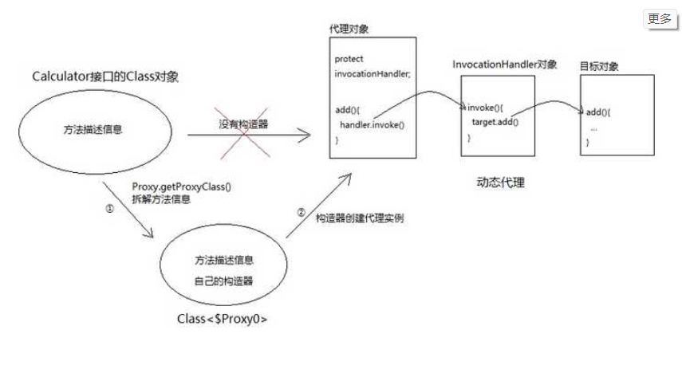
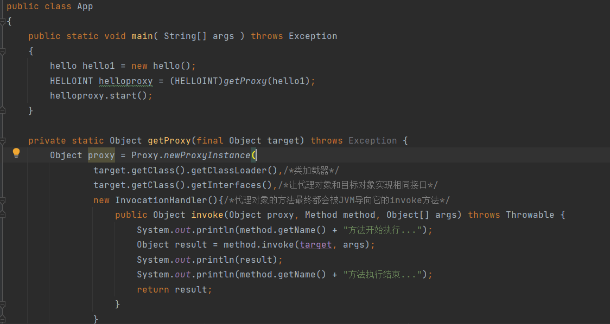
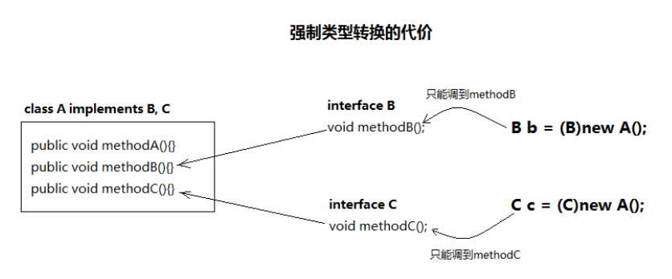

代理对象，是我们为了在原有对象的基础上实现功能的增强、修改等而为原有对象新建立的对象，比如，我们有一个对象A，现在我们试图在对象A进行操作之前添加时间记录，那么我们就可以给对象A创建一个代理对象Aplus，它的方法调用和A没有任何区别，只是会输出时间记录。那么实现了时间记录的对象Aplus就是代理对象，原对象A就是目标对象。
一、静态代理
想要实现一个简单的代理，我们最直观的想法是直接为目标类建立一个代理类，它接受一个目标类对象，并且可以实现增强操作。
比如：

但是这样很显然有一个问题，那就是有多少个目标类就需要创建多少个对应的代理类，并且要实现同样的接口，非常不方便。
二、动态代理
如果抛开实现细节，简单地来说的话，动态代理实现了根据目标对象接口来新建对象，并且可以将新建对象与（代理对象）与目标联系起来。
JDK提供了java.lang.reflect.InvocationHandler接口和 java.lang.reflect.Proxy类配合完成动态代理功能。
我们知道，接口是无法新建对象的（它没有构造方法），所以我们需要使用java.lang.reflect.Proxy类得到代理对象：
Proxy有个静态方法：getProxyClass(ClassLoader, interfaces)，只要你给它传入类加载器和一组接口，它就给你返回代理Class对象。
由此该Class对象是从接口对象实现的，作为接口无法新建实例的替代。

所以Proxy.getProxyClass()这个方法的本质就是：以Class造Class。
在造出原有接口的构造方法以实现了可以新接口对象之后，还要考虑新的对象如何去实现方法的调用，这里的调用肯定是对目标对象的方法调用，所以有了InvocationHandler类，它可以通过反射去调用方法。
在$Proxy0 类中，是存在一个字段handler的，它就是InvocationHandler对象，每一次对
$Proxy0对象（也就是代理对象）调用某个方法的时候，它就会被导向handler.invoke方法。

以下是一个demo，实现了一个简单的动态代理：
package org.example;
import java.lang.reflect.Constructor;
import java.lang.reflect.Method;
import java.lang.reflect.Proxy;
import java.rmi.Naming;
import java.rmi.Remote;
import java.rmi.RemoteException;
import java.rmi.registry.LocateRegistry;
import java.rmi.registry.Registry;
import java.rmi.server.UnicastRemoteObject;
import java.lang.reflect.InvocationHandler;
/**
* Hello world!
*
*/
//interface RMIServerTest extends Remote {String Pring() throws RemoteException; }
//class RMIServerTestServer implements RMIServerTest {
// @Override
// public String Pring() throws RemoteException {
// System.out.println("hello");
// return "this is a test";
// }
//}
public class App
{
public static void main( String[] args ) throws Exception
{
//参数1是随意的类加载器，参数2是代理对象的接口。hellProxyClazz 是org.example.$Proxy0类对象。
Class helloProxyClazz= Proxy.getProxyClass(hello.class.getClassLoader(),HELLOINT.class);
//得到构造器与创建实例，从这两步可以看出，$Proxy0的Class是复制了接口的Class的，但是存在一个可以接受InvocationHandler类的构造方法，并且可以强行转化为目标对象接口。
//从InvocationHandler 可见，$Proxy0类对象中实现了接口的所有方法，实现的方式，是通过调用InvocationHandler对象的invoke方法进行的。
Constructor cons = helloProxyClazz.getConstructor(InvocationHandler.class);
HELLOINT hello1 = (HELLOINT) cons.newInstance(new InvocationHandler(){
@Override
public Object invoke(Object proxy, Method method,Object[] args) throws Exception{
hello hello2 = new hello();
return method.invoke(hello2,args);
}
});
//
System.out.println("end!");
hello1.start();
}
}
interface HELLOINT{
public void start();
}
class hello implements HELLOINT{
public void start(){
System.out.println("start");
}
}
当然，从这里我们可以看出，目标对象位置是在InvocationHandler中的，每次调用都需要新建对象，这不优雅也不实用。
所以我们通常定义一个方法来获得代理对象：
private static Object getProxy(final Object target) throws Exception {
Object proxy = Proxy.newProxyInstance(
target.getClass().getClassLoader(),/*类加载器*/
target.getClass().getInterfaces(),/*让代理对象和目标对象实现相同接口*/
new InvocationHandler(){/*代理对象的方法最终都会被JVM导向它的invoke方法*/
public Object invoke(Object proxy, Method method, Object[] args) throws Throwable {
System.out.println(method.getName() + "方法开始执行...");
Object result = method.invoke(target, args);
System.out.println(result);
System.out.println(method.getName() + "方法执行结束...");
return result;
}
}
);
return proxy;
}
在该方法中，我们使用了newProxyInstance静态方法来获得代理对象，并且在InvocationHandler中覆写了invoke方法，通过传入不同的target，我们就可以实现对任意接口下的对象完成动态地、即时地代理。

三、动态代理总结与思考
动态代理需要目标类实现某个接口，然后代理类才能根据该接口实现代理，那么自然而然地，代理对象与目标对象形成了多态，也由此可知，代理对象在某些时候是无法实现目标对象的所有功能的，只有接口的定义，才是代理的实现范畴。
在代理对象的强制转型的过程中，必然只能得到一个接口的信息，如果一个类实现了多个接口，那么一次转型只能代理该接口的所有功能。

参考资料：
https://www.zhihu.com/question/20794107/answer/658139129
https://www.liaoxuefeng.com/wiki/1252599548343744/1264804593397984